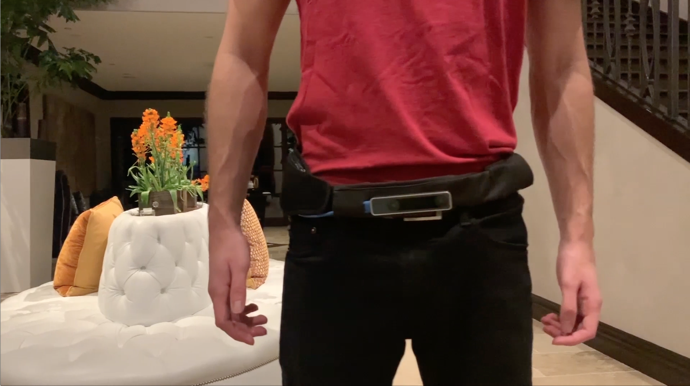
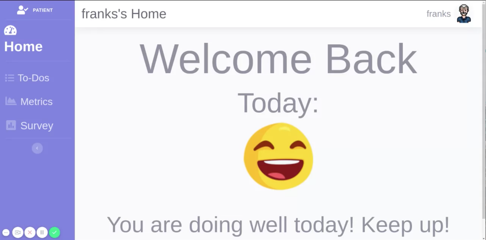
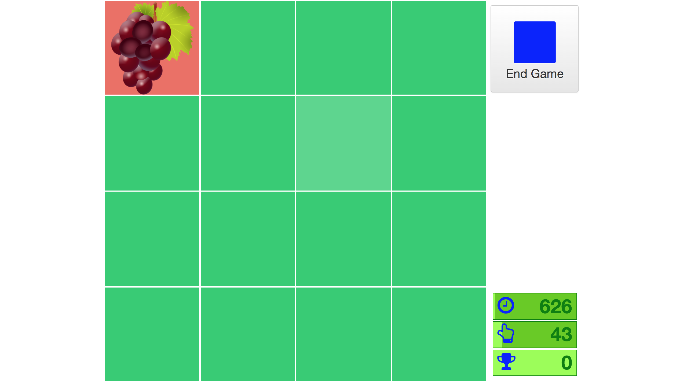

How does Plume work?
Plume is composed of 5 key components,
watch
Wearable Technology
Wearable sensors allow for regular daily monitoring in a comfortable and comprehensive way.
record_voice_over
Virtual Coach
Smart voice-based virtual coach that helps with daily medication reminders and regular long form reflections.
dashboard
Dashboards
Comprehensive set of dashboards for not only patients, but primary caregivers and doctors as well, to help monitor any Parkinson’s symptoms.
sports_esports
VR Remediation
Engaging and fun virtual reality games to ease tremors and improve balance.
emoji_objects
Memory
Memory games to improve and strengthen memory retention
Wearable technology
When it comes to accurately tracking physiological symptoms Plume’s wearable sensors allow for regular daily monitoring in a comfortable and comprehensive way. A sensor worn at the hip measures step count, length, instances of freezing as well as falls; a second sensor worn on the wrist measures upper body tremors; a third sensor worn on the wrist measures blood pressure when stationary.
How do I get started? expand_more
Using the Gait Sensor
Step 1
When starting your day, attach the gait sensor to any belt of your choice.
Step 2
Once the sensor is securely attached to your belt, turn ON the sensor via a small ON/OFF switch found on the side of the sensor.
Step 3
Keep the sensor on your body and turned ON throughout the day until you are ready to sleep for the evening.
Please consult your doctor on how frequently you should wear the belt.
Using the Upper Body Sensor
Step 1
When starting your day, put on your upper body sensor onto either wrist, similar to putting on a watch.
Step 2
Once the sensor is on the wrist securely, turn ON the sensor via a small ON/OFF switch found on the side of the sensor.
Step 3
Keep the sensor on your body and turned ON throughout the day until you are ready to sleep for the evening.
Please consult your doctor on how frequently you should wear the sensor.
Using the Blood Pressure Sensor
Step 1
Strap on your blood presure sensor on your wrist.
Step 2
Once the sensor is on the wrist securely, start the sensor via the START/STOP switch found on the front of the sensor to begin sensing.
Please Note
The sensor will need to be worn as directed by your physician. For example, your doctor may recommend you record your blood pressure only in the morning immediately after you wake up.
Virtual Coach
Research has shown that the cognitive and emotional effects of Parkinson’s Disease can be equally as difficult to manage as physical ones but often with less medical support. Plume’s system includes a smart voice-based virtual coach that helps with daily medication reminders and regular long form reflections. Not only will the long form reflections serve as a way to measure mental and emotional health for personal review, if the patient chooses to do so they can opt to show their progress with doctors.
How do I set up my technologies? expand_more
Amazon Echo
Step 1
Set up your Amazon Echo by following the instructions in the in-box manual. Make sure to place it in an area of your house that you are frequently in.
Step 2
Launch the Amazon Alexa app on your phone. Click on the top left icon to open the menu. Once the side bar is open, tap on “Skills & Games.”
Step 3
Under Skills & Games, click on the top right icon and search “Plume.” Select Plume Assistant and click “ENABLE TO USE.”
Note: The skill is not on the market yet, as this was designed for prototyping purposes only.
Tile Tracker
Step 1
Follow the in-box instructions for Tile and the Tile app. You will be able to label each Tile tracker to the belonging of your choice.
Step 2
Launch the Amazon Alexa app on your phone. Click on the top left icon to open the menu. Once the side bar is open, tap on “Skills & Games.”
Step 3
Once inside the “Skills & Games” page, type in “Tile” at the top search bar. Select the “Tile” icon and click “ENABLE TO USE.”
Bluetooth Beacon
Please Note
Due to material shortage brought by COVID-19, the Bluetooth beacon was used to prototype the object tracking feature in place of RFID tags and RFID sensors.
Step 1
Follow the in-box instructions to set up your Bluetooth beacon. Make sure to attach the beacons to the same objects as the Tile trackers.
Ideally, these beacons would be replaced by RFID tags.
Step 2
Download the “Plume Door Sensor” app on your phone. Attach the phone near your front door for simulation purposes.
Ideally, this app would be replaced by a RFID sensor.
Creating Routines
Step 1
In your Amazon Alexa app, click on the top left icon to open the menu. Once the side bar is open, tap on “Routines”
Step 2
Once under Routines, tap on the “+” icon located on the top right corner of your screen.
You will now create two skills: one called the “Medication check-in” and another called the “Emotions check-in.”
Step 3
For the medication check-in, enter your routine name as “Medication check-in.”
Next, select “When this happens” and click “Schedule”
Schedule the medication check-in at the desired time and frequency under your doctor’s instructions.
Finally, select “Add action,” scroll to the bottom and select “Skills”
Tap on “Your Skills” and select “Plume Assistant”
Step 4
Repeat the steps in Step 3 to create another routine called “Emotions check-in.” It is best if you schedule this check-in in the evening of every day.
How do I get started? expand_more
Missing Object Detection
Before you leave the house, you can ask Alexa if you are missing any important items. Alexa will collect data from the sensors on your items and let you know if you are missing anything. In this case, you can then ask Alexa to help you find it, which will ring the Tile on the object.
Step 1
When you are ready to leave the house say, “Alexa, I’m leaving the house. Am I missing anything?”
Alexa will get data from the sensors and tell you if you are missing something.
Alexa, Am I missing anything?
It looks like you’re missing your keys.
Would you like me to help you find them?
Step 2
Once Alexa responds with the missing items, say: “Alexa, find my _____” to locate your item.
For example, once you say, “Alexa, find my keys,” the corresponding Tile sensor will ring to alert you of where the key is.
Alexa, find my keys.
[Tile detector for your keys rings]
Medication Check-in
Patients can schedule medication reminders multiple times a day. When the scheduled time comes, Alexa rings, ready to deliver the reminder.
Step 1
At the time scheduled in your Medication check-in Alexa routine, Alexa will ring. At the sound of the ring, say: “Alexa, open Plume Assistant.”
After a short check-in about your emotional state, Alexa will ask “Have you taken your medicine?”
Alexa, open Plume Assistant.
Good morning, Jean. How are you?
I’m doing well.
That’s great to hear. By chance, have you taken your pills yet?
Step 2
Respnd to Alexa by saying “Yes” or “No,” based on whether you have taken your medicine or not.
To update your medication state, say: “Alexa, open Plume.” Then say, “I just took my medicine,” to update your status.
I just did a few minutes ago.
Okay, great. You’re scheduled to take your next dose at 12 p.m. Have a great day.
Emotions Check-in
At the end of every day, Plume will check in with you about your mood for the day. This way, your doctors will have a better understanding of your emotional well-being at your next appointment.
Step 1
At the time scheduled in your Medication-check-in Alexa routine, Alexa will ring. At the sound of the ring, say: “Alexa, open Plume Assistant.”
Alexa, open Plume Assistant.
Good evening, Jean. This is your scheduled talk session. Is this a good time to talk?
Step 2
Begin your conversation to share your emotional health for the day.
Analyzing your mood from free-formed responses
Through our sentiment analysis model, we analyze your mood based on your description of your feelings.
Yes. Let’s talk.
How was your day today?
It was very, very tiring.
It sounds like you didn’t have such a great day. Did I hear you correctly?
Emotion improvement suggestions
If you state that you are not feeling well, Plume can recommend a set of suggestions to help improve your mood.
Talking to your loved one can help make you feel better. You mentioned earlier that you feel close to Sarah.
Would you like to call her now?
Sure, why not.
Alright. Please say, “Alexa, call Sarah.”
Alexa, call Sarah.
Calling Sarah now.
“Surprise me” - Personalize your suggestions
At the end of your check-in, you can choose to answer a set of questions to personalize your emotion improvement suggestions.
Would you like to answer some personalized questions?
Doing so can help me suggest better ways to improve your mood.
Yes.
What is your current hobby?
I enjoy collecting coins.
It sounds like you enjoy collecting coins. Is that correct?
Yes.
Duly noted.
For in-depth information on the emotional check-in, please watch the following video
Dashboards
Due to Parkinson’s Disease chronic nature and unique symptom manifestation in each patient it’s important to allow doctors and caregivers visibility into symptom development overtime. Plume provides a comprehensive set of dashboards for not only patients, but primary caregivers and doctors as well.
How do I get started? expand_more
Create an Account
If you have not used the dashboard before, you will need to create an account. Note: You must create your account before your caregiver creates their account.
Step 1
On the log in screen, at the bottom right of the white “Welcome to Plume” box, click “Create an Account”
Step 2
Fill in the necessary details to create your account.
Plume will ask for your first and last name, desired username, email address and desired password.
Choose to Register as “Patient” and click the “Register Account” button.
Please Note
We recommend that you write down your username and password on paper and store it somewhere safe and hidden, where you can find it later if you forget.
Login
Step 1
In the “Enter Username…” field, type the username you chose when you created your account.
Step 2
In the “Password” field, type the password you chose when you created your account.
Please Note
If you don’t want to have to log in next time, select the checkbox next to “Remember Me”
If you have forgotten your password, click “Forgot Password?”
Home Page
View your current health overview
View Your To-Dos
Step 1
On the left side of the screen, in the blue vertical bar, click “To-Dos”
You can view your To-Dos for today, this week, or this month by toggling through the buttons located at the top right corner of the screen.
Set an Event
Step 1
At the center of the screen, click the gray “Add event…” button.
Step 2
In the field next to “Event:”, write a name for the event you would like to add.
Step 3
In the field below “Date:”, enter the date of the event you would like to add by doing the following:
Click the field.
In the calendar popup, click the date for which you would like to schedule an event.
If you wish to change the month displayed, click the arrow at the top right of the popup to move ahead a month, or the arrow at the top left to move back.
Step 3
In the field below “Start Time:”, enter the time that the event will start by doing the following:
Click the field.
In the popup, set the hour value by clicking the up arrow on the left to increase the hour or the down arrow on the left to decrease it. Note that this uses a 24-hour clock.
In the popup, set the minute value by clicking the up arrow on the left to increase the minutes or the down arrow on the left to decrease them
When you have reached the desired time, either click anywhere outside of the popup, or press the “Enter” key on your keyboard.
In the field below “End Time:”, enter the time that the event will end by following the same instructions as above.
View Your Metrics
Step 1
On the left side of the screen, in the blue vertical bar, click “Metrics”
Health Metrics
Near the top of the screen, to the right of the “Home” button, click “Health Metrics” if it is not already selected.
Scroll down the page (if necessary) to view your blood pressure, heart rate, and tremor data.
View Game Records
Near the top of the screen, to the right of the “Health Metrics” button, click “Game Records” if it is not already selected.
In the Game Records Table, view your scores in Twist Fit, Beatbox, Word Search, and Tile Matching.
Complete your Survey Questions
Step 1
On the left side of the screen, in the blue vertical bar, click “Survey”
Step 2
For each item on the page, click on the answer that most appropriately describes how much trouble you have had with the survey item since you last completed a survey.
For example, if you have fallen very frequently, you might select “5” for Falls. If you have not had any issues with thinking, you might select “0” for Thinking.
Feel free to ask your caregiver for their input on the survey!
Step 3
When you have finished, click “Submit Survey” at the bottom of the screen.
Please note
We recommend that you fill out a survey as frequently as your physician advises. Ask them if you are unsure how often to fill it out!
Remediation
While medication and specialized operations are often employed for symptom alleviation, remediation activities such as light exercise are tightly coupled with the easement of tremors or balance concerns. Plume’s system includes a set of virtual reality games that makes consistent exercise engaging and fun each time.
How do I get started? expand_more
Remediation through Virtual Reality
Step 1
Find an area (5’x5’ minimum) that is free of tripping hazards to use as your playspace
Step 2
Turn on the Oculus Quest VR headset.
Putting on the VR headset
1. Place back of headband on back of head, about ear height
2. Pull the headset over your head, the band is flexible so use force. If you wear prescription glasses then place glasses into the headset
3. Pull down over your eyes. If you wear prescription glasses then keep a hand on the front of the headset to hold it steady. Use the other hand to pull the strap back, the band is flexible so use force, then bring it down over the back of your head, to about ear height
4. Adjust headband and headset until comfortable
Step 3
Once you enter the games library, open the VR Remediation Game.
Step 4
Choose the game that you want to play, either “BeatBox” or “TwistFit” by pointing your finger and reaching out to press the respective button.
Step 5
Follow the in-game instructions for how to play
BeatBox
1. Press continue and choose a difficulty level from “Hard, Medium or Easy.
2. Choose a background song from the selection.
3. Choose either to play the game in standing or sitting orientation (this selection is conditional on difficulty).
4. Punch blue blocks using left hand and red blocks using right hand.
TwistFit
1. Press continue to start the game.
2. Fit your hands through the holes in the walls without hitting the edges.
3. Use the left hand through blue walls and the right hand through red.
Memory
Plume takes into account those who experience memory issues as a result of Parkinson’s Disease by providing two games meant to assess cognitive ability. The word search game tests language recognition abilities, and the tile-matching game assesses the patient’s visual memory, episodic memory, and learning abilities.
How do I get started? expand_more
Play a Memory Game
Step 1
In Dashboards, click on “Memory Game.”
Then, choose the game that you want to play -- “Word Search” or “Tile Matching”
Tile Matching
The goal is to match every like pair of fruit/vegetables hidden under the tiles before the timer runs out!
Step 1
At the top right of the screen, click on the gray button with purple squares inside to choose the grid size. The game becomes more difficult the greater the grid size!
3x3 has 8 squares (4 pairs to be matched)
4x4 is the default and has 16 squares (8 pairs to be matched)
5x5 has 24 squares (12 pairs to be matched)
6x6 has 36 squares (18 pairs to be matched)
7x7 has 48 squares (24 pairs to be matched)
8x8 has 64 squares (32 pairs to be matches)
Step 2
At the top right of the screen, click on the gray button with purple squares inside to choose When you are ready to begin playing, click on a tile to see the fruit or vegetable hidden there. The timer will then begin.
You may only view two items at once, so it can get tricky!
Step 3
When you reveal two matching items in a row, they will remain flipped over, and your score will increase.
Step 4
When you successfully match all the tiles or the timer runs out, your score will appear in a message on your screen. Click Ok.
If you want to replay the game, click the “Reset” button at the top right of the tile grid, then follow the Tile Matching instructions again as normal.
Word Search
The goal is to locate, on the board, all of the words in the word bank in under two minutes!
Step 1
At the bottom middle of the screen, click the “Start” button to shuffle the board and begin the 2 minute timer.
Step 2
Search the board for the French words displayed in the list on the left.
Step 3
When you find a word on the board, click and hold on the first letter, drag your mouse (still holding) toward the end of the word, and then release the click on the last letter.
Step 4
When you successfully match all the tiles or the timer runs out, your score will appear in a message on your screen. Click Ok.
If you want to replay the game, click the “Reset” button at the top right of the tile grid, then follow the Tile Matching instructions again as normal.